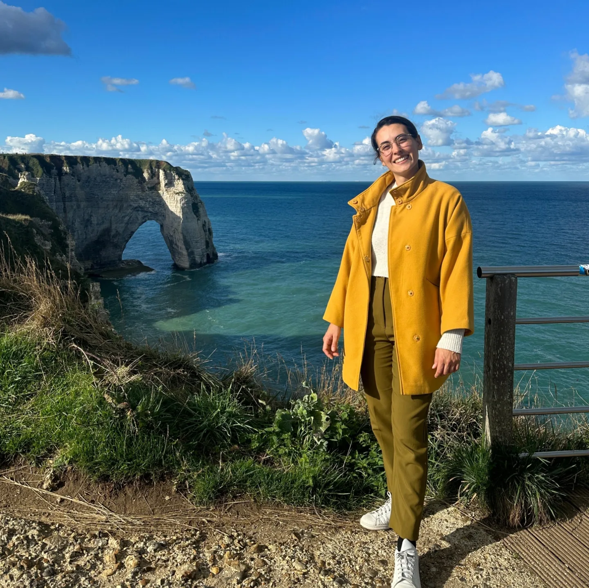

Giulia Cavalleri
Ph.D. Student in Mathematics
Dipartimento di Matematica F. Casorati, Università di Pavia, Via Ferrata 5, 27100, PV, Italy
My research focuses on initial and boundary value problems derived from tumor growth models, which typically involve Cahn-Hilliard-type equations. Specifically, I aim to conduct a theoretical analysis of the analytical properties of these problems, such as the existence, uniqueness, and regularity of solutions, as well as their associated control problems.

Publications
Last update: 17/03/2025, reverse chronological order
Preprints
- G. Cavalleri, P. Colli, A. Miranville, E. Rocca, On a Brain Tumor Growth Model with Lactate Metabolism, Viscoelastic Effects, and Tissue Damage. Preprint: arXiv:2502.02126 [math.AP], (2025), 1-33.
- G. Cavalleri, A phase field model of Cahn-Hilliard type for tumour growth with mechanical effects and damage. Preprint: arXiv:2409.14817 [math.AP], (2024), 1-43.
Talks and Conferences
Forthcoming
- "Young Researchers Meeting on PDEs II". University of Milano-Bicocca (Italy), September 9-12, 2025. Invited speaker.
Past
- "Journée informelle de ReaDiNet". University of Paris-Saclay (France), January 10, 2025. Poster presentation.
- "The 14th AIMS Conference on Dynamical Systems and Differential Equations". NYU Abu Dhabi (UAE), December 16-20, 2024. Invited speaker.
- "Norman working group of Mathematical Biology - LMAH (Le Havre Normandie) & LMRS (Rouen Normandie) - Session 8". University of Le Havre (France), November 28-29, 2024. Invited speaker.
- "Italian-Japanese Workshop on Variational Perspectives for PDEs". University of Pavia (Italy), September 09-13, 2024. Poster presentation.
- "Diffuse Interface methods in Continuum Mechanics: analysis, singular limits, and algorithms". Cetraro (Italy), July 08-12, 2024. Poster presentation.
- "41th Congress of the French Theoretical Biology Society". University of Poitiers (France), June 24-27, 2024. Invited speaker.
- "From Cells to Tissues: Models, Analysis and Applications". Como (Italy), June 10-14, 2024. Contributed talk.
- "Lions-Magenes Days 2024". University of Pavia (Italy), May 21-22, 2024. Poster presentation.
- "The Cahn-Hilliard equation - recent advances and new challenges". Chęciny (Poland), April 21-26, 2024. Contributed talk.
- "Hausdorff School - Analysis of PDEs: Variational and Geometric Perspectives". University of Bonn and Hausdorff School for Advanced Studies in Mathematics (Germany), July 10-14, 2023. Selected participant.
Teaching
University of Pavia
- A.Y. 2023-2024: Teaching assistant for “Analisi Matematica I”, degree course in Ingegneria Civile e Ambientale and Ingegneria Edile e Architettura.
- A.Y. 2023-2024: Seminar lectures for “Elementi di Matematica”, degree course in Scienze e tecnologie per l’ambiente e la natura (12 hours).
- A.Y. 2022-2023: Seminar lectures for “Elementi di Matematica”, degree course in Scienze e tecnologie per l’ambiente e la natura (12 hours).
University of Milano-Bicocca
- A.Y. 2022-2023: Peer tutoring for students with disabilities and with S.L.D., support in the writing of the bachelor thesis in Mathematical Analysis .
- A.Y. 2020-2021: Tutoring activities for “Analisi Matematica I”, degree course in Matematica (60 hours).
- A.Y. 2020-2021: Tutoring activities for “Analisi Matematica I”, degree course in Scienze Statistiche ed Economiche (16 hours).
- A.Y. 2020-2021: Peer tutoring for students with disabilities and with S.L.D. for “Analisi Matematica I”.
- A.Y. 2020-2021: Tutoring activity for the project “Piano lauree scientifiche - riduzione tassi di abbandono” for “Analisi Matematica I”, degree course in Statistica e Scienze delle Informazioni and in Scienze Statistiche ed Economiche.
- A.Y. 2019-2020: Peer tutoring for students with disabilities and with S.L.D. for “Algebra Lineare e Geometria”.
- A.Y. 2019-2020: Tutoring activity for the project “Piano lauree scientifiche - riduzione tassi di abbandono” for “Analisi Matematica I”, degree course in Statistica e Scienze delle Informazioni and in Scienze Statistiche ed Economiche.
Education
- Joint Ph.D. Program between University of Pavia, University of Milano-Bicocca and INdAM, 2022-Present.
- Supervisors: Prof. Pierluigi Colli, Prof. Elisabetta Rocca.
- Visiting: I spent 6 months at the University of Le Havre, visiting Professor Alain Miranville.
- Master Degree in Mathematics, University of Milano-Bicocca, 2019-2021.
- Title of the thesis: "Unique Continuation Principles at the Boundary".
- Supervisor: Prof. Veronica Felli.
- Grade: 110/110 cum Laude.
- Bachelor Degree in Mathematics, University of Milano-Bicocca, 2016-2019.
- Title of the thesis: "The Classical Müntz–Szász Theorem and the One on the Unit Disc".
- Supervisor: Prof. Stefano Meda.
- Grade: 110/110 cum Laude.